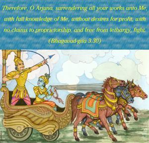
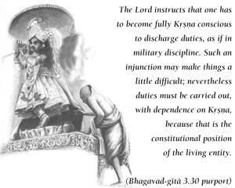

Therefore, O Arjuna, surrendering all your works unto Me, with full knowledge of Me, without desires for profit, with no claims to proprietorship, and free from lethargy, fight.


This verse clearly indicates the purpose of the Bhagavad-gītā. The Lord instructs that one has to become fully Kṛṣṇa conscious to discharge duties, as if in military discipline. Such an injunction may make things a little difficult; nevertheless duties must be carried out, with dependence on Kṛṣṇa, because that is the constitutional position of the living entity. The living entity cannot be happy independent of the cooperation of the Supreme Lord, because the eternal constitutional position of the living entity is to become subordinate to the desires of the Lord. Arjuna was therefore ordered by Śrī Kṛṣṇa to fight as if the Lord were his military commander. One has to sacrifice everything for the good will of the Supreme Lord, and at the same time discharge prescribed duties without claiming proprietorship. Arjuna did not have to consider the order of the Lord; he had only to execute His order. The Supreme Lord is the soul of all souls; therefore, one who depends solely and wholly on the Supreme Soul without personal consideration, or in other words, one who is fully Kṛṣṇa conscious, is called adhyātma-cetās. Nirāśīḥ means that one has to act on the order of the master but should not expect fruitive results. The cashier may count millions of dollars for his employer, but he does not claim a cent for himself. Similarly, one has to realize that nothing in the world belongs to any individual person, but that everything belongs to the Supreme Lord. That is the real purport of mayi, or “unto Me.” And when one acts in such Kṛṣṇa consciousness, certainly he does not claim proprietorship over anything. This consciousness is called nirmama, or “nothing is mine.” And if there is any reluctance to execute such a stern order, which is without consideration of so-called kinsmen in the bodily relationship, that reluctance should be thrown off; in this way one may become vigata-jvara, or without feverish mentality or lethargy. Everyone, according to his quality and position, has a particular type of work to discharge, and all such duties may be discharged in Kṛṣṇa consciousness, as described above. That will lead one to the path of liberation.